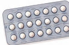
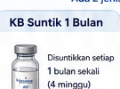
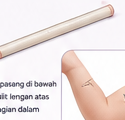
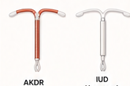
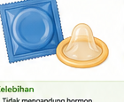
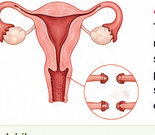
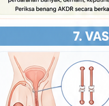
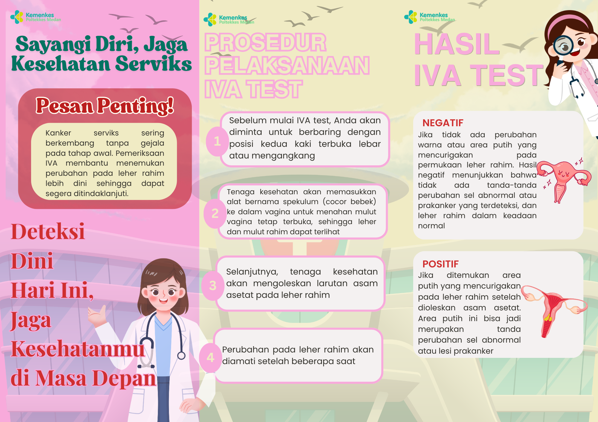
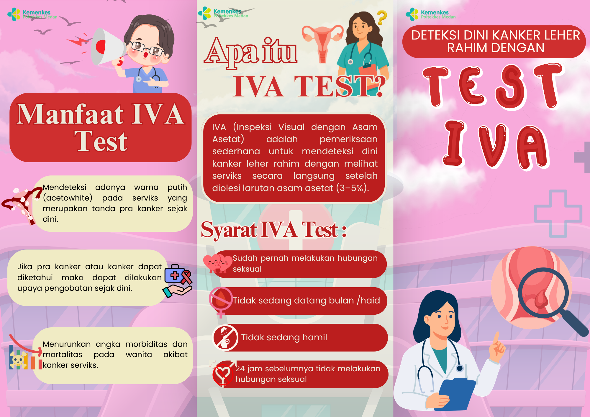

Menstruasi
Pahami pola menstruasi dan perubahan yang perlu diperhatikan.
MEDIA EDUKASI KESEHATAN
Ruang informasi sederhana untuk membantu perempuan mengenali kesehatan payudara, menstruasi, kesehatan reproduksi, dan pilihan KB.
Mulai Belajar →Informasi edukatif yang mudah dipahami dan dapat diakses dari HP.
PILIH MATERI
Klik salah satu topik untuk membaca materi edukasi.
PAYUDARA
SADARI adalah pemeriksaan payudara sendiri yang dilakukan untuk mengenali perubahan pada payudara sedini mungkin.
Jika menemukan perubahan yang menetap atau mengkhawatirkan, konsultasikan kepada tenaga kesehatan.
VIDEO EDUKASI
Simak video berikut untuk membantu memahami pemeriksaan payudara sendiri.
PEMERIKSAAN KLINIS
SADANIS adalah pemeriksaan payudara klinis yang dilakukan oleh tenaga kesehatan untuk menilai kondisi payudara.
Pemeriksaan klinis membantu menilai perubahan yang ditemukan dan menentukan apakah diperlukan pemeriksaan atau tindak lanjut lebih lanjut.
Website ini bersifat edukasi dan tidak menggantikan pemeriksaan langsung oleh tenaga kesehatan.
PANTAU SIKLUS
Masukkan hari pertama menstruasi terakhir dan panjang siklus rata-rata.
Ini hanya perkiraan berdasarkan data yang dimasukkan.
JAGA DIRI
Pahami pola menstruasi dan perubahan yang perlu diperhatikan.
Jaga kebersihan area genital dengan cara yang tepat.
Kenali perbedaan keputihan normal dan perubahan yang perlu diperiksa.
Kenali cara pencegahan dan pentingnya pemeriksaan bila berisiko.
Deteksi dini dan pemeriksaan rutin berperan penting dalam pencegahan.
Kenali pemeriksaan IVA sebagai salah satu metode deteksi dini kanker serviks.
KELUARGA BERENCANA
Klik salah satu metode KB untuk melihat gambar alat, lama pemakaian, cara penggunaan, kelebihan, kekurangan, dan hal yang perlu diperhatikan.

Kontrasepsi hormonal yang diminum secara teratur.
Cara penggunaan: diminum setiap hari sesuai petunjuk dan jenis pil.
Kelebihan: praktis dan kesuburan umumnya dapat kembali setelah dihentikan.
Efek samping: mual, pusing, serta rasa tegang atau nyeri pada payudara dapat terjadi.
Catatan: efektivitas dapat menurun bila sering lupa minum atau ada interaksi dengan obat tertentu. Tidak melindungi dari IMS.

Tersedia KB suntik 1 bulan dan 3 bulan.
KB suntik 1 bulan: diberikan setiap 1 bulan sesuai jadwal.
KB suntik 3 bulan: diberikan setiap 3 bulan sesuai jadwal.
Kelebihan: efektivitas tinggi bila jadwal dipatuhi dan tidak perlu diingat setiap hari.
Efek samping: perubahan pola menstruasi dan peningkatan berat badan dapat terjadi.
Catatan: kesuburan dapat membutuhkan waktu untuk kembali setelah penggunaan dihentikan. Tidak melindungi dari IMS.

Batang kecil yang dipasang di bawah kulit lengan.
Cara kerja: melepaskan hormon secara perlahan untuk mencegah kehamilan.
Kelebihan: praktis, jangka panjang, tidak perlu digunakan setiap hari, dan dapat dilepas bila ingin berhenti.
Efek samping: perubahan pola menstruasi dan pada sebagian pengguna dapat terjadi peningkatan berat badan.
Catatan: pemasangan dan pelepasan dilakukan oleh tenaga kesehatan. Tidak melindungi dari IMS.

Alat kontrasepsi yang dipasang di dalam rahim oleh tenaga kesehatan.
Jenis: AKDR tembaga dan IUD hormonal.
Kelebihan: perlindungan jangka panjang dan tidak perlu diingat setiap hari.
Yang perlu diperhatikan: setelah pemasangan dapat terjadi kram atau perdarahan bercak. Pemeriksaan dilakukan bila ada keluhan atau sesuai anjuran tenaga kesehatan.
Catatan: pemasangan dilakukan oleh tenaga kesehatan. Tidak melindungi dari IMS.

Metode penghalang yang digunakan saat hubungan seksual.
Cara penggunaan: gunakan setiap kali berhubungan seksual, pasang sebelum kontak genital, dan gunakan dengan benar sampai selesai.
Kelebihan: mudah diperoleh, tidak mengandung hormon, dan membantu melindungi dari IMS bila digunakan dengan benar dan konsisten.
Kekurangan: dapat robek atau terlepas bila penggunaan tidak tepat.

Metode kontrasepsi permanen bagi perempuan.
Cara kerja: saluran tuba ditutup, dipotong, atau diikat sehingga sperma dan sel telur tidak bertemu.
Kelebihan: permanen dan tidak perlu menggunakan KB setiap hari.
Kekurangan: memerlukan tindakan medis dan bersifat permanen sehingga perlu pertimbangan matang.

Metode kontrasepsi permanen bagi laki-laki.
Cara kerja: saluran sperma (vas deferens) dipotong atau ditutup agar sperma tidak masuk ke air mani.
PENTING: vasektomi tidak langsung efektif setelah tindakan. Kontrasepsi lain tetap perlu digunakan sampai dinyatakan berhasil sesuai pemeriksaan semen dan anjuran tenaga kesehatan.
Kelebihan: permanen dan tidak mengganggu fungsi seksual.
Kekurangan: memerlukan tindakan medis dan perlu pertimbangan matang karena bersifat permanen.
MEDIA EDUKASI
LEAFLET / POSTER IVA

